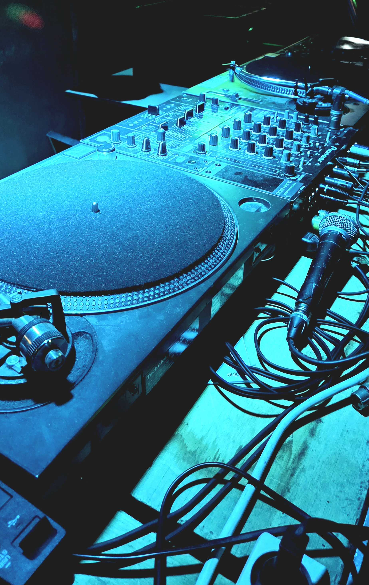
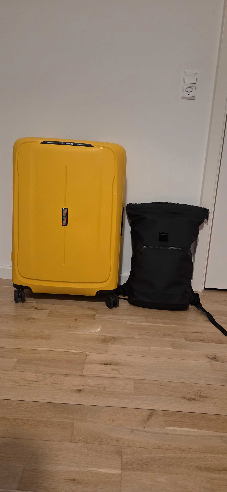
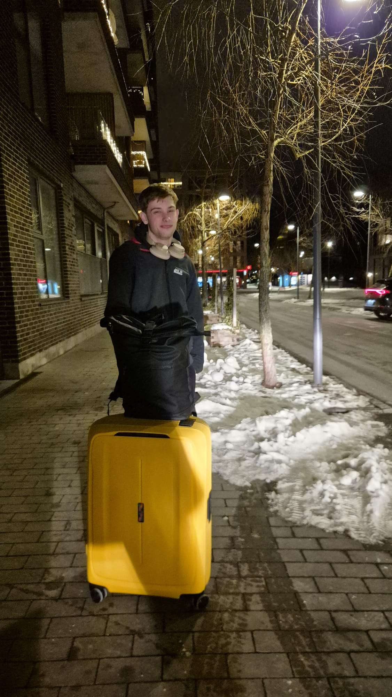
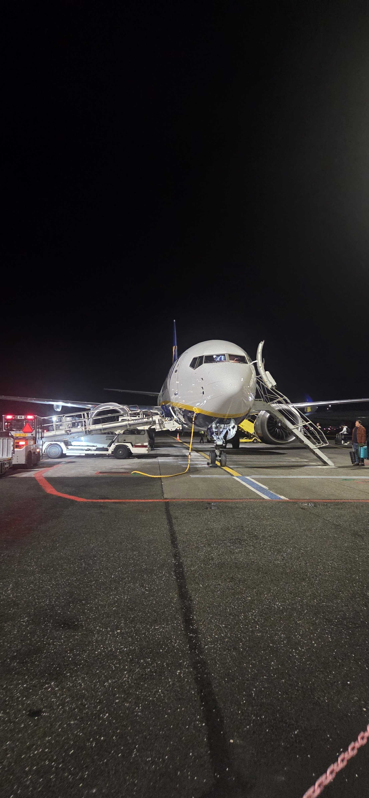

After many days of stress and prep, the day had finally arrived. Where the adventure begins. Friday was actually a lovely day, with the sun finally coming out for the first time in what
felt like weeks. With the sun on my face i went out, met some of my friends for the last time, got a pretravel haircut, and came home to add the last few things to my bag.
I had actually seen some of my friends the evening before, going to a much anticipated concert of ROMES, and acoustic electropunk band from Canada, was a great night, but did mean i came home a bit later than i had hoped 😅
Anyways, back to the friday, My suitcase weighed only 9kgs, there was an inial moment of panic as our scales were accidentally set to lbs (so 20.3lbs) but that go sorted quickly. After everything was packed, we had a final dinner together
I set off alone in a taxi at around 19:30 with my flight being 2 and a half hours later. Which was probably a bit early, as the airport was basically deserted,and check in/security took a grand total of 10minutes, plus the plane being 30mins delayed
this gave me ample time to read through one of my japan travel guides.
Landing at 23:30 meant it was quite quick to leave the airport, and get picked up by my dad, and then ending up home 15minutes later to the last 2 nights in a proper bed



